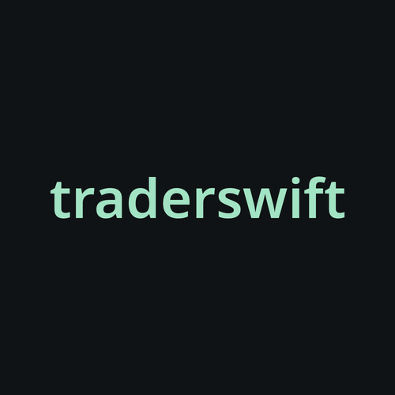

Update 01
What Is TraderSwift?
What TraderSwift is, who it is for, what is running today, and what is in the pipeline.
Start with chapter 01TraderSwift is the infrastructure layer for agentic trading.
It is a set of open-source blockchains and services that trading agents, and the people who run them, can build on.
Others build the front ends and the apps on top. They get paid through x402, with the full payment going directly to them.
This update explains what that means. It shows what is running today, what is being built, and what is still a plan.
It is updated as each part goes live.
Table of contents
Markdown ↗- 01What is TraderSwift?What a trading agent needs, and the open-source parts TraderSwift provides for it.2 min
- 02Where is trust not required?What makes TraderSwift different. You check what happened, instead of taking anyone's word for it.3 min
- 03Why is TraderSwift open source?If someone else's code manages your keys and your money, reading that code is the bare minimum.2 min
- 04Who is TraderSwift for?Traders, builders and network participants, and how builders get paid.1 min
- 05How are trading keys held today, and what goes wrong?Where a bot's key usually lives, the ways it leaks, and a live example.2 min
- 06How does Signer work?Where the key comes from, how it is split, how an order is signed, and how you stop it.3 min
- 07What is running today?Signer, the hub chain and the charts data node.1 min
- 08What is in the pipeline?The marketplace, signal providers, Ledger, Vault and Storage.3 min
- 09How will we teach it?An educational blog on each site, with how-to guides and prompts for your own AI.1 min
- 10Final thoughtsWhat TraderSwift is for, and what to read next.1 min